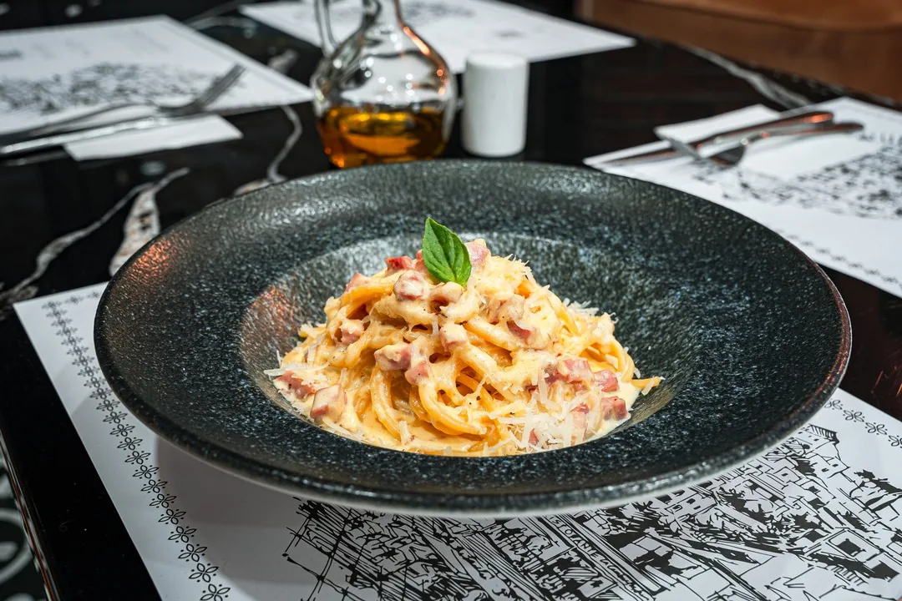
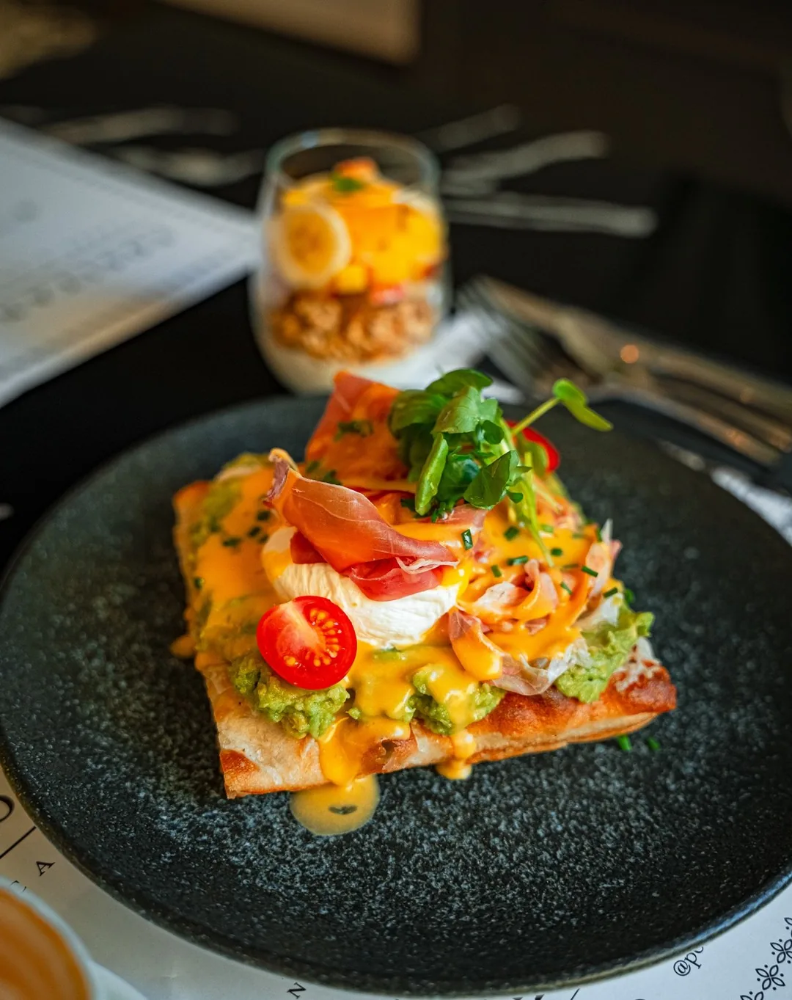

Bienvenidos a Positano
Caffè, forno y cucina italiana en Av. Chicureo 847. Abrimos temprano con café Mauro y brunch; al mediodía, antipasti para compartir, pastas de la casa, risottos y pizzas; y para cerrar, spritz, vinos y coctelería de autor.
“Positano toca una fibra sensible. Es un lugar de ensueño que no te parece real hasta que estás allí, pero cuya profunda realidad sientes con nostalgia cuando lo has dejado.”
John Steinbeck
Positano. Caffè & Cucina.
Fatto in casa
Lo hecho en casa, primero.
En Positano hacemos en casa la pasta rellena y las lasañas, el pan y las focaccias, la mermelada del brunch y el limoncello de nuestros spritz.
Los acompañamos con productos italianos: pasta Rummo, mozzarella di bufala, prosciutto, mortadella di Bologna, grana padano y café Mauro.
Ver la carta


Dentro de Positano
Mesas de mármol, vajilla de gres, individuales con el mapa de Positano y una bóveda de piedra iluminada por faroles.

La bóveda de piedra 
Desde la cocina 
El salón 
Detalle de mesa 
La barra de café 
El emporio
Novedades y el día a día de la casa, en Instagram.
@positano_caffe_cucinaVisítanos
Te esperamos en Chicureo.
Para reservar, llámanos y te confirmamos la disponibilidad.
Reservas y consultas
Horario
- Lunes a viernes
- desde 8:00
- Sábado, domingo y festivos
- desde 9:00
- Brunch
- hasta 12:30
- Almuerzo
- desde 13:00
- Cierre
- por confirmar Contenido de ejemplo